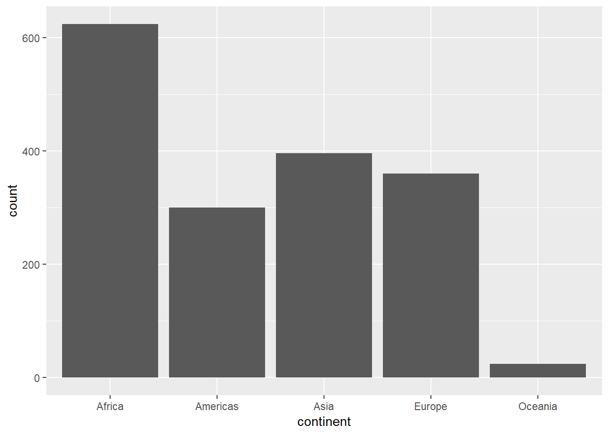
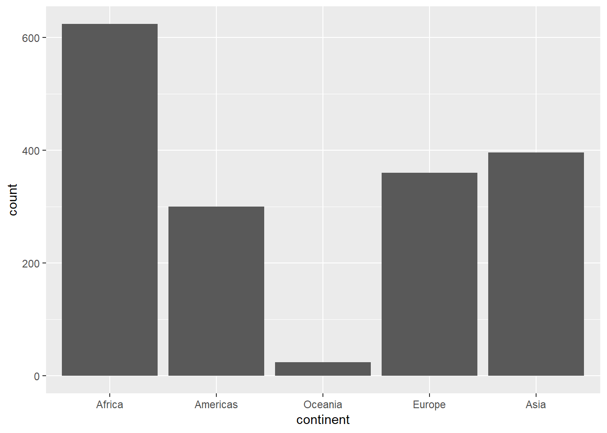
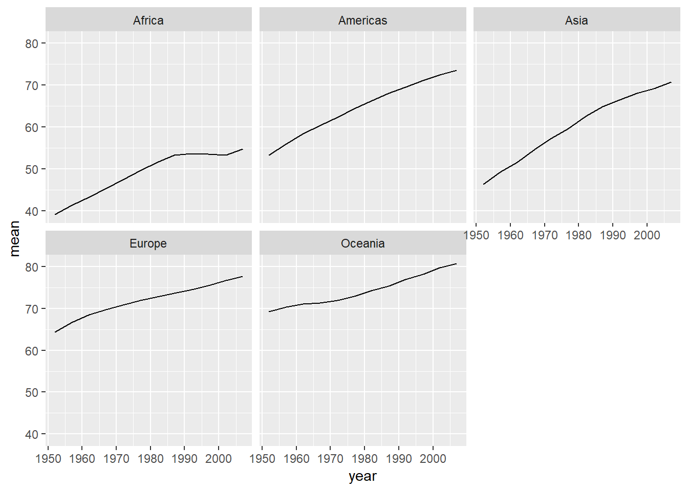
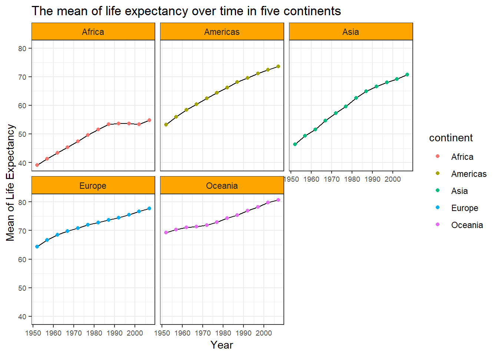

hw05
Introduction
This is the assignment5 of STAT545, which would mainly focus on the skills of factor, I/O and visual design. The file is well organised by four parts:
- Factor Management
- File Import/Export
- Visualization Design
- Writing Figures to File
Let’s start it with loading the packages.
suppressPackageStartupMessages(library(tidyverse))## Warning: package 'tidyverse' was built under R version 3.5.1## Warning: package 'ggplot2' was built under R version 3.5.1## Warning: package 'tidyr' was built under R version 3.5.1## Warning: package 'readr' was built under R version 3.5.1## Warning: package 'purrr' was built under R version 3.5.1## Warning: package 'dplyr' was built under R version 3.5.1## Warning: package 'forcats' was built under R version 3.5.1suppressPackageStartupMessages(library(plotly))## Warning: package 'plotly' was built under R version 3.5.1suppressPackageStartupMessages(library(gapminder))## Warning: package 'gapminder' was built under R version 3.5.1Part 1: Factor management
- Drop factor / levels
To figure out the function of droplevels, Oceania is dropped here.
before_drop <- gapminder %>%
filter(continent != "Oceania") ## Warning: package 'bindrcpp' was built under R version 3.5.1levels(before_drop$continent)## [1] "Africa" "Americas" "Asia" "Europe" "Oceania"after_drop <- droplevels(before_drop)
levels(after_drop$continent)## [1] "Africa" "Americas" "Asia" "Europe"From the above, we could see that droplevels() function removes unused factor Ocenia in continent.
- Reorder levels based on knowledge from data
In this section, the effects of arrange() and fct_reorder() are dicusssed in three dimensions: table, levels and figure.
- Firstly, let’s look into the continent of original dataset.
knitr::kable(head(gapminder)) # report the first factor in the table| country | continent | year | lifeExp | pop | gdpPercap |
|---|---|---|---|---|---|
| Afghanistan | Asia | 1952 | 28.801 | 8425333 | 779.4453 |
| Afghanistan | Asia | 1957 | 30.332 | 9240934 | 820.8530 |
| Afghanistan | Asia | 1962 | 31.997 | 10267083 | 853.1007 |
| Afghanistan | Asia | 1967 | 34.020 | 11537966 | 836.1971 |
| Afghanistan | Asia | 1972 | 36.088 | 13079460 | 739.9811 |
| Afghanistan | Asia | 1977 | 38.438 | 14880372 | 786.1134 |
levels(gapminder$continent) # report the order of factors## [1] "Africa" "Americas" "Asia" "Europe" "Oceania"gapminder %>%
ggplot(aes(x = continent)) +
geom_bar() # demonstrate the sequence of levels in the plot
- Then try to
arrange()the continent in descending order. See what would happen.
df <- gapminder %>%
arrange(desc(continent))
knitr::kable(head(df))| country | continent | year | lifeExp | pop | gdpPercap |
|---|---|---|---|---|---|
| Australia | Oceania | 1952 | 69.12 | 8691212 | 10039.60 |
| Australia | Oceania | 1957 | 70.33 | 9712569 | 10949.65 |
| Australia | Oceania | 1962 | 70.93 | 10794968 | 12217.23 |
| Australia | Oceania | 1967 | 71.10 | 11872264 | 14526.12 |
| Australia | Oceania | 1972 | 71.93 | 13177000 | 16788.63 |
| Australia | Oceania | 1977 | 73.49 | 14074100 | 18334.20 |
levels(df$continent)## [1] "Africa" "Americas" "Asia" "Europe" "Oceania"df %>%
ggplot(aes(x = continent)) +
geom_bar()As observed, the first factor listed in the table has changed to Oceania since arrange(). However, it doesn’t have a effect on the levels and graph.
- Move to
fct_reordernow. Order the continent level by the max of life expectancy.
df <- gapminder %>%
mutate(continent = fct_reorder(continent,.fun=max,lifeExp))
knitr::kable(head(df))| country | continent | year | lifeExp | pop | gdpPercap |
|---|---|---|---|---|---|
| Afghanistan | Asia | 1952 | 28.801 | 8425333 | 779.4453 |
| Afghanistan | Asia | 1957 | 30.332 | 9240934 | 820.8530 |
| Afghanistan | Asia | 1962 | 31.997 | 10267083 | 853.1007 |
| Afghanistan | Asia | 1967 | 34.020 | 11537966 | 836.1971 |
| Afghanistan | Asia | 1972 | 36.088 | 13079460 | 739.9811 |
| Afghanistan | Asia | 1977 | 38.438 | 14880372 | 786.1134 |
levels(df$continent)## [1] "Africa" "Americas" "Oceania" "Europe" "Asia"df %>%
ggplot(aes(x = continent)) +
geom_bar()
fct_reorder has no effect on the contents of table. But the order of levels indeed changes. And the sequence in the graph always follows the levels.
- Last, use both
fct_orderandarrangehere.
df <- gapminder %>%
arrange(desc(continent)) %>%
mutate(continent = fct_reorder(continent, .fun=max, lifeExp))
knitr::kable(head(df))| country | continent | year | lifeExp | pop | gdpPercap |
|---|---|---|---|---|---|
| Australia | Oceania | 1952 | 69.12 | 8691212 | 10039.60 |
| Australia | Oceania | 1957 | 70.33 | 9712569 | 10949.65 |
| Australia | Oceania | 1962 | 70.93 | 10794968 | 12217.23 |
| Australia | Oceania | 1967 | 71.10 | 11872264 | 14526.12 |
| Australia | Oceania | 1972 | 71.93 | 13177000 | 16788.63 |
| Australia | Oceania | 1977 | 73.49 | 14074100 | 18334.20 |
levels(df$continent)## [1] "Africa" "Americas" "Oceania" "Europe" "Asia"df %>%
ggplot(aes(x = continent)) +
geom_bar()It can be concluded that the effects of two functions mix together. The table follows arrange and the levels follow fct_reorder.
Part 2: File I/O
Out of convenience, use df(non-alphabetical) from the previous section to test.
write_csv(df,"my_df.csv")
read_df <- read_csv("my_df.csv")## Parsed with column specification:
## cols(
## country = col_character(),
## continent = col_character(),
## year = col_integer(),
## lifeExp = col_double(),
## pop = col_integer(),
## gdpPercap = col_double()
## )summary(read_df)## country continent year lifeExp
## Length:1704 Length:1704 Min. :1952 Min. :23.60
## Class :character Class :character 1st Qu.:1966 1st Qu.:48.20
## Mode :character Mode :character Median :1980 Median :60.71
## Mean :1980 Mean :59.47
## 3rd Qu.:1993 3rd Qu.:70.85
## Max. :2007 Max. :82.60
## pop gdpPercap
## Min. :6.001e+04 Min. : 241.2
## 1st Qu.:2.794e+06 1st Qu.: 1202.1
## Median :7.024e+06 Median : 3531.8
## Mean :2.960e+07 Mean : 7215.3
## 3rd Qu.:1.959e+07 3rd Qu.: 9325.5
## Max. :1.319e+09 Max. :113523.1head(read_df)## # A tibble: 6 x 6
## country continent year lifeExp pop gdpPercap
## <chr> <chr> <int> <dbl> <int> <dbl>
## 1 Australia Oceania 1952 69.1 8691212 10040.
## 2 Australia Oceania 1957 70.3 9712569 10950.
## 3 Australia Oceania 1962 70.9 10794968 12217.
## 4 Australia Oceania 1967 71.1 11872264 14526.
## 5 Australia Oceania 1972 71.9 13177000 16789.
## 6 Australia Oceania 1977 73.5 14074100 18334.levels(read_df)## NULLThe new df from csv file stores the contents of original table, but it lose the factors.
Part 3: Visualization design
This graph shows how the mean of life expectancy changes in five continents.
p <- gapminder %>%
group_by(continent,year) %>%
summarise(mean = mean(lifeExp)) %>%
ggplot(aes(y = mean,x = year)) +
facet_wrap(~ continent) +
geom_line()
p
It’s correct but not good. Let’s make it more juicy now.
p_new <- p +
geom_point(aes(color = continent)) + # colored by continent
labs(x = "Year",
y = "Mean of Life Expectancy",
title = "The mean of life expectancy over time in five continents") + # change the axis-label's names and add the title
theme_bw() + # apply the theme
theme(axis.text = element_text(size=7), # adjust the size of axis-text
strip.background = element_rect(fill= "orange") # fill the background of banner
)
p_new
All the changes are mentioned in the in-line code comments. The new graph is much better to diffentiate the five continents and understand what the values represent.
Next up, convert this graph to a plotly one.(Shown in the file)
ggplotly(p_new)Many advantages that plotly has over ggplot2, such as:
- Interactive with graph.
- Customizing the layout (plot borders, y axis) is easier.
- Flexible for Python, Matlab, and Excel, among other languages.
- Possible for multi-dimensions graph.
Part 4: Writing figures to file
Save the plot from the previous section to file.
ggsave("my_plot.png", p_new, width = 10, height = 6, dpi = 300)Then read it out.
Load the plot